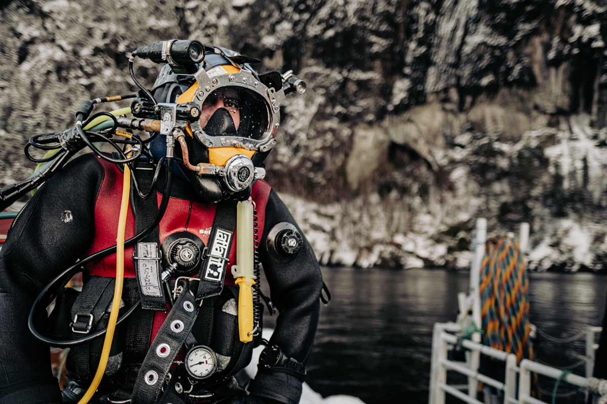
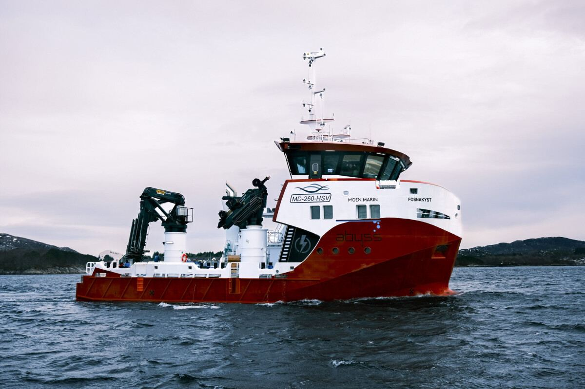

Tjenester 5
Tjenester 5
Tjenester Service Notvask Dykking Avlusing Andre tjenester Fartøy Om Abyss Om oss Innsikt Karriere Bærekraft Samfunnsengasjement Fiskevelferd og biosikkerhet HMS og kvalitet Kontakt oss Karriere Ring vakttelefon Vakttelefon: +47 476 80 888 En allsidig og fleksibel maritim leverandør Abyss har landets mest fleksible flåte, og garanterer sikker og levedyktig drift for oppdrettere langs hele kysten.
Over vann. Under vann. Abyss leverer komplette operasjoner for havbruksnæringen. Vi løser kundenes behov langs hele kysten – hele døgnet.
Notvask Dykking Avlusing Bygget for krevende operasjoner Les mer om oss Vi har lært at operasjoner ute på havet ikke bare handler om fartøy og utstyr. Det handler om å forstå oppdraget, velge riktig kapasitet og gjennomføre arbeidet med kontroll, erfaring og ansvar for både folk, fisk og anlegg.
Erfarne fagfolk, tydelige rutiner og døgnbemannet beredskap gir kundene forutsigbarhet når oppdraget krever presisjon.



Kort fortalt: hva trenger du?
Beskriv saken, så svarer vi med hva det krever og hva det koster.